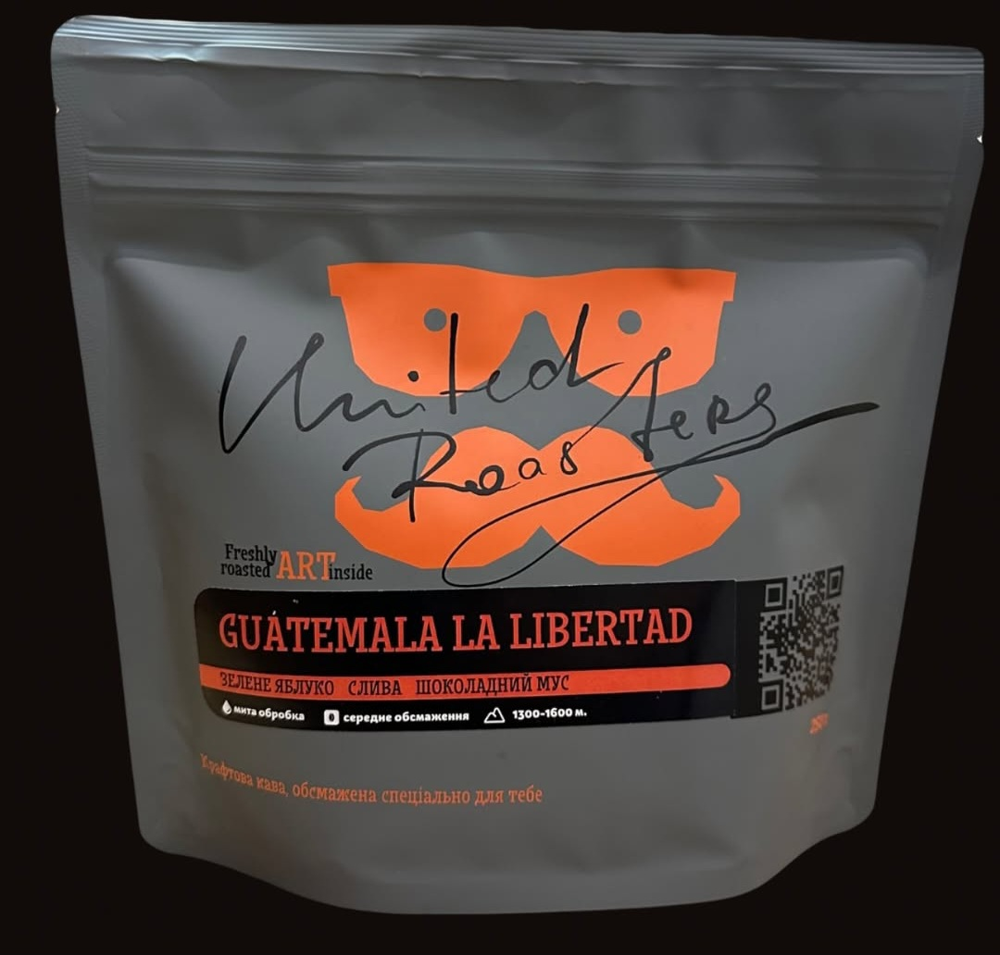
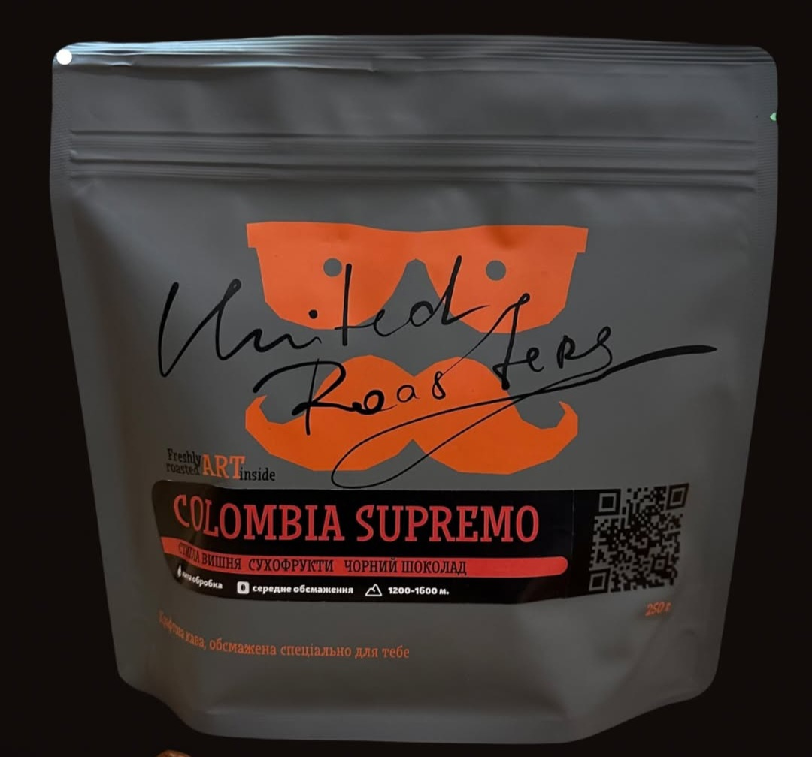
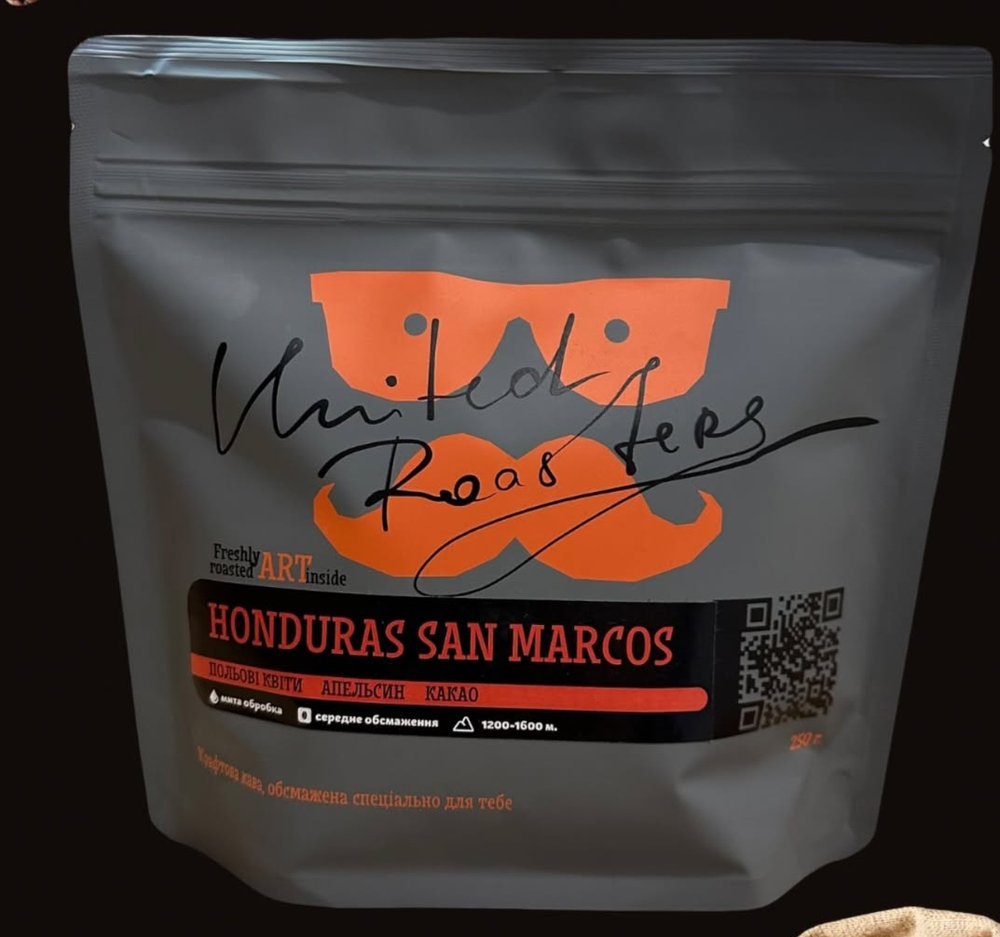
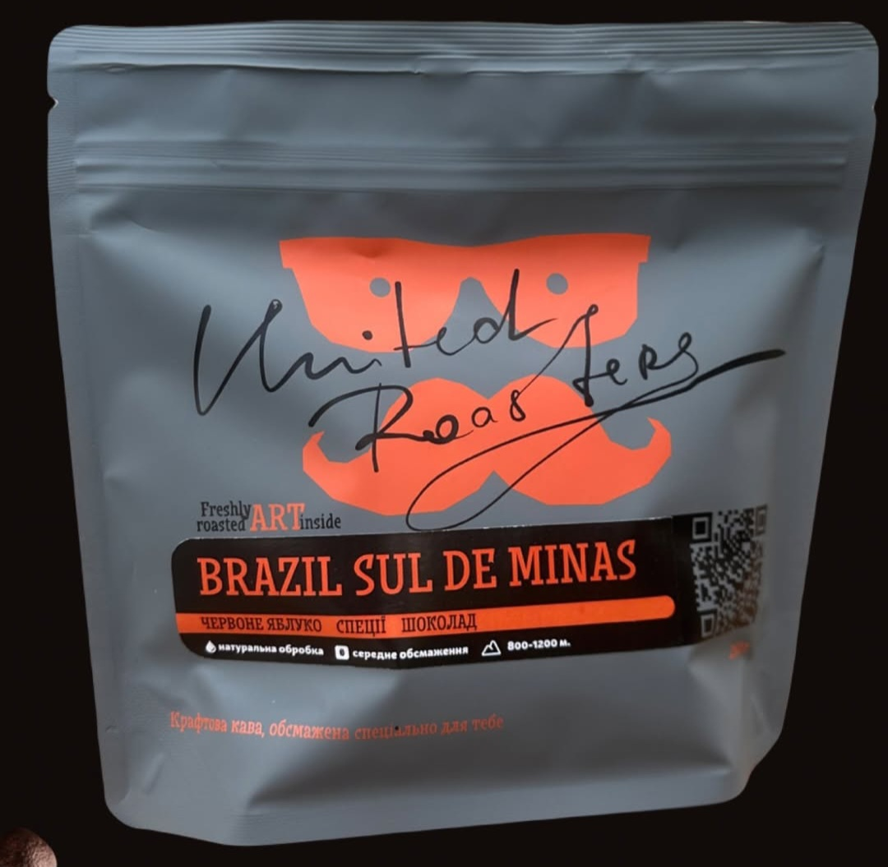

Про каву
Наші сорти кави ретельно відібрані, обсмажені за унікальними рецептами, щоб дарувати насолоду кожному гурману.
Обсмажування кави
Ми використовуємо м'яке середнє обсмаження, аби зберегти природну глибину смаку зерна.
Кава в зернах або мелена
Придбайте каву у зручному для вас форматі — у зернах або змелену на місці.

Гватемала
• Зелене яблуко
• Слива
• Шоколадний мус

Колумбія
• Стигла вишня
• Сухофрукти
• Чорний шоколад

Гондурас
• Польові квіти
• Апельсин
• Какао

Бразилія
• Червоне яблуко
• Спеції
• Шоколад
У Vilna Space ви можете не тільки скуштувати каву, а й придбати обсмажені зерна для приготування вдома. Ми пропонуємо фасування по 250г та 1кг, а також допомагаємо обрати ідеальний сорт для вашого смаку.